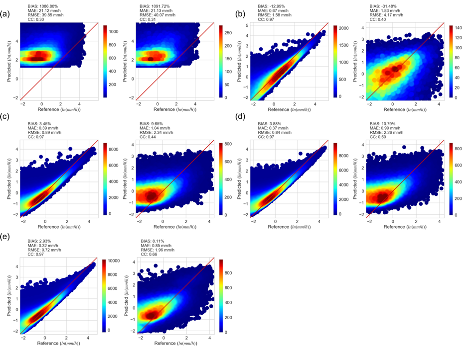
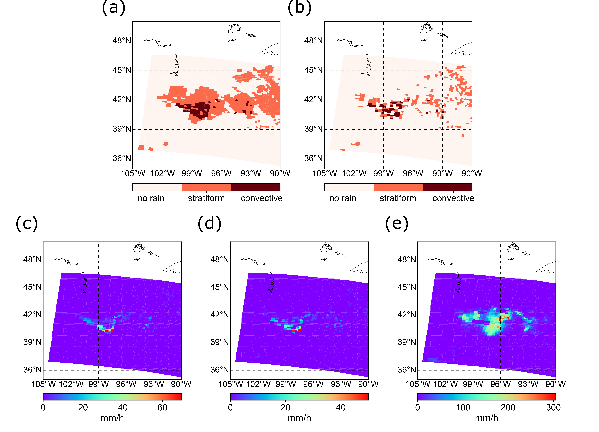
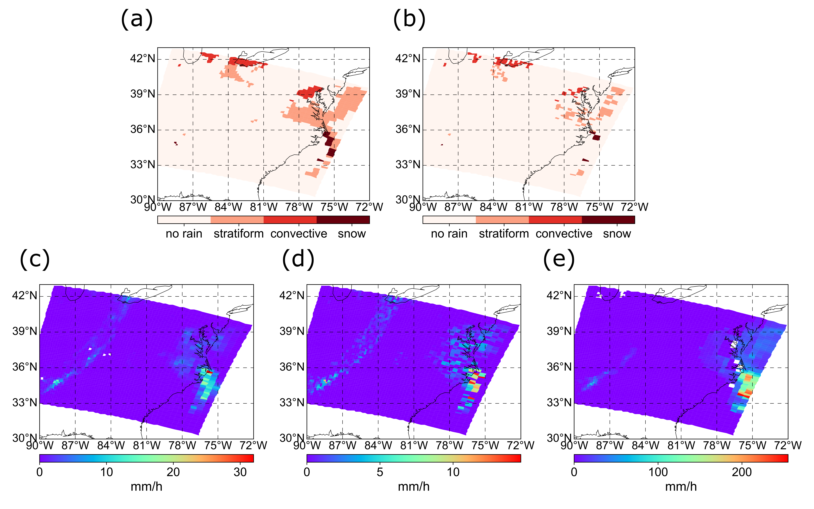

As we know, remote sensing satellite provides an unprohibitive scan across the globe. It is advantageous to incorporate more satellite information to retrieve ground precipitation.

AMSU stands for Advanced Microwave Sounding Unit, onboard NOAA satellites. It was initially lanched in 1998, but there are subsequent missions. AMSU is a sounding satellite, which is primarily designed to measure vertical atmospheric temperature to understand storm characteristics. But as an additional benefit, it can also be used to retrieve precipitation rate based on its multi-band information. Previous attempts on precipitation retrievals were not very suscessful. For instance, the NOAA operational platform which uses old version of GPROF to approximate rainfall rate fail to give a resonable estimates. I guess that is why in GPM IMERG, AMSU is no longer used from satellite constellations.
In this study, we want to explore the capacity of precipitation estimation of AMSU with some data-driven approach, and more importantly, is the black box model can be explained? If so, what can we use it to innovate or broaden our understanding of satellite precipitation.
 Animation of AMSU cross-scan
Animation of AMSU cross-scan
Deficiencies of current AMSU-based algorithm are summarized as follows:
BT-RR relationship is not precise (see Fig.1). In light rain, brightness temperature literally spans from 15 to 30K.
“Parallax effect” means the vertical disalignment.
 Fig.1 BT-RR scatter plot
Fig.1 BT-RR scatter plot
We innovate the precipitation retrievals with deep learning approaches. In this case, we adopt the LinkNet structure because it is light-weight and effective. The LinkNet structure is as follows. the CNN-based model takes care of parallax effects because the spatial structure is reserved, let alone the encoding-decoding structure.
 Fig.2 LinkNet model structure
Fig.2 LinkNet model structure
In our study, we select eight frequencies in AMSU which could best capture precipitation from all aspects (light, medium, and large). These eight raw data undergo LinkNet to first predict precipitaiton type because we want to make corresponding prediction of rates based on type (i.e., different types have totally different rates) and then each type of precipitation will be mapped by random forest taking BT as well as ancillary data (i.e., eight neighboring celss, surface types, DEM, azimuthal angle, and diurnals) After that, the rainfall rate is utimately produced. All the results are contrasted against NSSL MRMS radar product.
 Fig.3 Processing Framework
Fig.3 Processing Framework
Here, we present some of the results of our model, compared to benchmark (operational system) in terms of classification, quantification, and two case studies.
 Fig.4 Classification results
Fig.4 Classification results
 Fig.5 Quantification results
CASE 1: convective storm
 Fig.5 Case 1
CASE 2: North American Blizzard
 Fig.6 Case 2